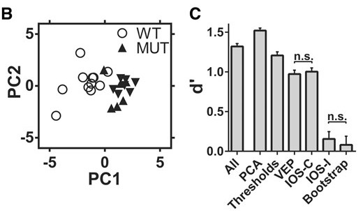
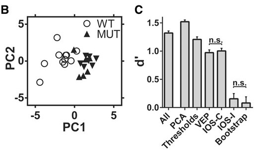
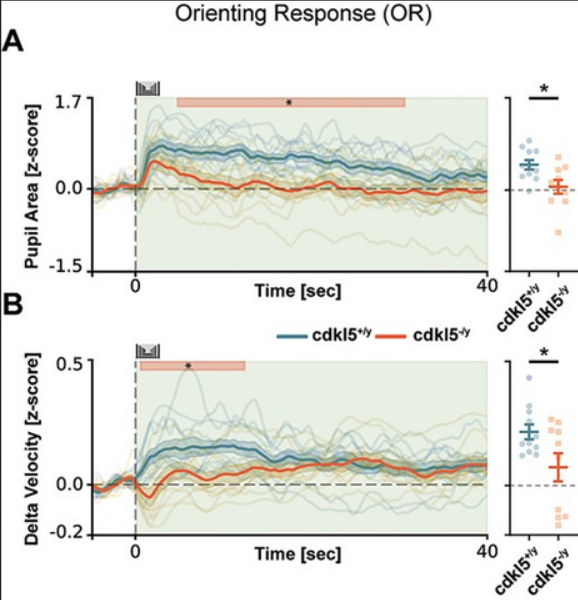
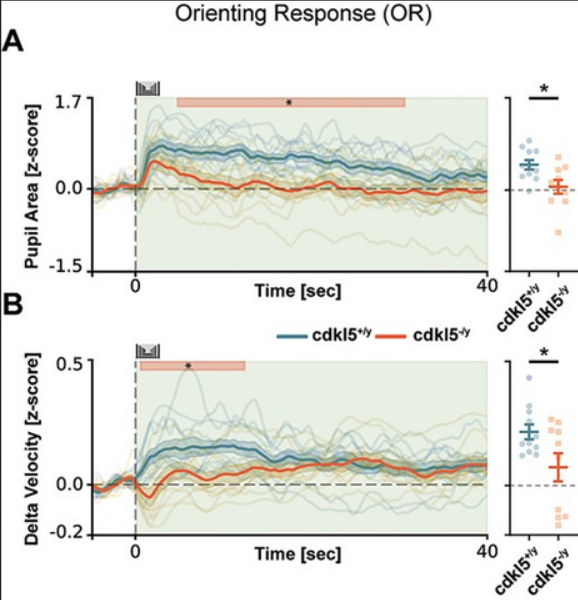
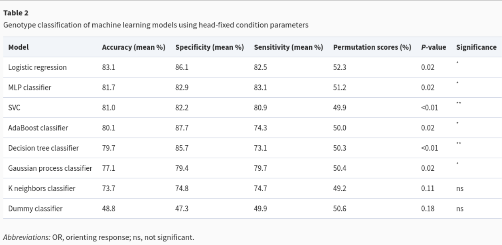
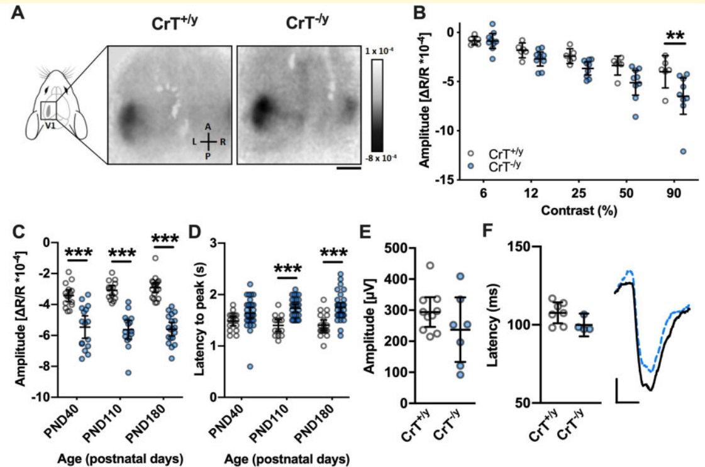
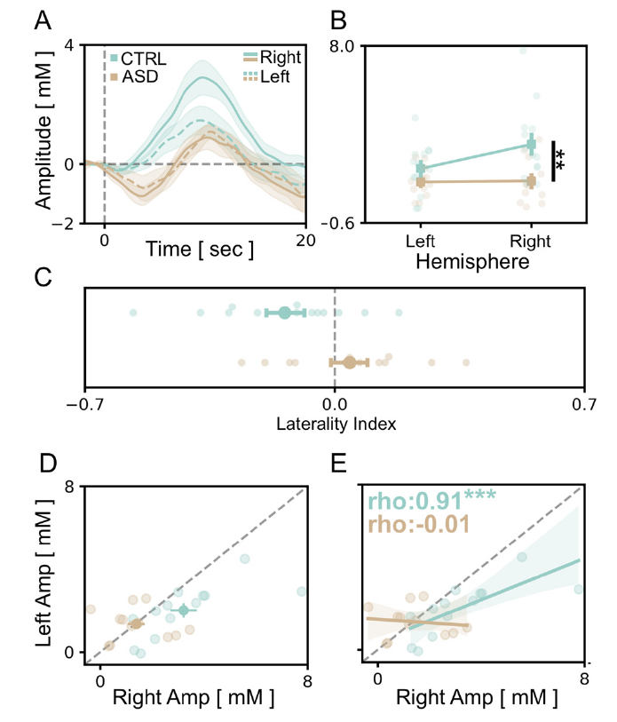

Metodi di Psicofisiologia e Neuroimaging nella Clinica e nelle Neuroscienze Cognitive
Translational Biomarkers
University of Florence
Translational biomarkers
A translational biomarker is a measurement that:
quantifiesa biological process linked to a disorder- is
repeatableacross sessions and sites - can be measured in both
modelsandpatients
Typical outputs you can bring into trials:
- diagnostic / stratification feature
- pharmacodynamic marker
- mechanism-linked readout (helps interpret “why” a treatment works)
What to do (a practical checklist):
- define the
construct(what brain function you are indexing) - choose a readout with high
reliability - test
developmentalsensitivity - test
treatmentsensitivity - report effect size + cross-validated
prediction
A biomarker must be deployable, not only significant.
Neurodevelopmental disorders as critical period disorders
A key theoretical proposal:
Some neurodevelopmental disorders may reflect disruptions of critical periods.
If maturation is altered during these windows:
- circuit refinement may be incomplete or mistimed
- long-term functional deficits emerge
- later interventions may have reduced efficacy
This shifts focus from static deficit → altered developmental trajectory.
Why this matters clinically:
If disorders involve altered critical period timing, then we need biomarkers that:
- detect dysfunction
early - track developmental trajectories
- are sensitive to maturation dynamics
- can monitor reopening or rescue of plasticity
Why visual cortex is ideal for critical period biomarkers
Primary visual cortex (V1) is one of the best-characterized critical period systems:
- well-defined sensory input
- precisely mapped circuitry
- known developmental windows
- measurable plasticity
Its maturation can be tracked quantitatively using:
ISI&fNIRSimagingVEP
This makes V1 a natural testbed for developmental biomarkers.
If a disorder alters critical period timing or gain we expect to observe:
- abnormal emergence of evoked responses
- altered amplitude or tuning
- reduced experience-dependent plasticity
- persistent deficits into adulthood
Therefore, evoked V1 responses can serve as:
- early
detectionmarkers - mechanistic indicators of circuit maturation
- potential pharmacodynamic endpoints
Why arousal is also linked to critical periods
Neuromodulators regulate plasticity:
acetylcholinenorepinephrine
These systems:
- gate cortical responsiveness
- modulate signal-to-noise
- influence experience-dependent refinement
Arousal state is therefore not just behavioral, it shapes developmental plasticity.
If neuromodulatory tone is altered:
- critical period dynamics may shift
- plasticity thresholds may change
- circuit refinement may be impaired
Pupil and HRV provide scalable readouts of these systems.
Thus arousal biomarkers may index a mechanism that directly impacts developmental timing.
CDKL5 Deficiency Disorder (CDD)
CDKL5
Cause - pathogenic variants in the CDKL5 gene (X-linked) - impacts neurodevelopmental signaling and circuit maturation
Core clinical picture - early-onset seizures (often in infancy) - global developmental delay and intellectual disability - motor impairment and hypotonia; often limited speech - frequent comorbidities: sleep, feeding, autonomic dysregulation
Why biomarkers matter - symptoms are heterogeneous and change over development - clinical trials need objective, repeatable functional endpoints beyond caregiver report
Why CDD is ideal for V1 + arousal biomarkers
CDD has strong rationale for visual cortex endpoints:
- early circuit maturation is disrupted
- sensory systems show measurable developmental trajectories
- evoked responses can reveal when deficits emerge
This supports an early, longitudinal biomarker strategy.
CDD also fits an arousal biomarker strategy:
- widespread neuromodulatory and autonomic involvement is plausible
- arousal regulation can be measured without demanding tasks
- passive measures support severe disability cohorts
This supports scalable endpoints for monitoring and stratification.
Experiment: Early V1 impairment in CDKL5 mice
Intrinsic Optical Signal Imaging and VEPs Reference
- longitudinal transcranial
IOSduring development
- repeated recordings across a developmental window
VEPrecordings for validation
- phenotype summarized with multi-feature classification (
SVM)
- developmental emergence of reduced evoked visual responses
- deficit persists into later ages
- early measures discriminate genotype with high accuracy
Experiment: Early V1 impairment in CDKL5 mice


 

CDKL5: from model to patient
Preclinical evidence showed:
- developmental impairment of
V1evoked responses - stable circuit-level deficit
- strong genotype discrimination
But translational relevance requires confirmation in patients.
Key question:
Do individuals with CDKL5 show measurable visual evoked abnormalities?
And crucially:
Do physiological measures correlate with clinical severity?
If yes → the animal biomarker has clinical validity.
Experiment: Visual evoked potentials in CDKL5 patients
Visual Evoked Potentials and Clinical Severity in CDKL5 Reference
- record
VEPresponses in individuals with CDKL5
- quantify amplitude and latency parameters
- assess relationship with standardized clinical severity scales
- altered
VEPresponses compared to controls
- physiological parameters correlate with
clinical severity
- stronger impairment associated with more severe phenotype
- confirms that
V1dysfunction is present in patients
- validates the mouse
V1phenotype as clinically relevant
- supports evoked visual responses as a potential
trial endpoint
Experiment: Visual evoked potentials in CDKL5 patients
Correlation between the amplitude of VEP P100 and the CDKL5 Deficiency disorder - Severity Assessment (CDD-SA) Reference
Experiment: Arousal dysregulation in CDKL5 mice
Operant behavior + pupillometry + machine learning Reference
- operant task to probe cognition/strategy
- simultaneous
pupilrecording and locomotor monitoring
- supervised
MLto classify genotype from multimodal features
- altered tonic pupil dynamics and stimulus-evoked pupil responses
- atypical coupling between pupil state and locomotion
- multimodal features improve genotype discrimination
Experiment: Arousal dysregulation in CDKL5 mice
 


Experiment: Deep learning of spontaneous arousal dynamics (cross-model → patient)
Deep learning on spontaneous pupil dynamics + transfer to HRV Reference
- collect spontaneous
pupilfluctuations across ASD-related mouse models
- train a convolutional network to decode arousal-related temporal signatures
- apply transfer learning to human physiological data (
HRV)
- identifies altered arousal signatures across models, including early stages
- captures temporal structure beyond summary statistics
- transfer learning supports discrimination in patient datasets
Experiment: Deep learning of spontaneous arousal dynamics (cross-model → patient)
Creatine Transporter Deficiency (CTD)
SLC6A8 → impaired creatine transport → neurodevelopmental impairment
Cause - pathogenic variants in SLC6A8 (X-linked) - reduced creatine availability in brain → altered energy buffering
Core clinical picture - global developmental delay and intellectual disability - speech and motor impairment; behavioral dysregulation - seizures can occur; autistic-like features are common
Why biomarkers matter - trials need objective endpoints that track brain function over time - a strong biomarker should be treatment-sensitive and repeatable
Experiment: CTD Translational phenotype
Shared EEG network alterations (mouse ↔︎ patient) Reference
- EEG & ISI in CTD mouse model
- EEG in individuals with CTD
- oscillatory + network metrics
- quantitative comparison
- abnormal ISI and cortical oscillations in mice
- overlapping EEG alterations in patients
- objective cross-species signature
Experiment: CTD Translational phenotype
Experiment: CTD Translational phenotype
Experiment: CTD Translational phenotype
From IOS to fNIRS
In CTD mice we identified:
- robust
V1hemodynamic deficits
- strong WT vs KO separation
- longitudinal sensitivity
This established a reliable visual cortex biomarker.
Translational question:
How do we bring this to children?
Constraints:
- non-invasive
- tolerant to movement
- feasible in pediatric populations
Solution: adopt fNIRS as human analog of IOS.
Why fNIRS for pediatric translation?
fNIRS measures:
- changes in
HbO - changes in
HbR - total hemoglobin (
THb)
It is:
- portable
- quiet
- child-friendly
- suitable for repeated sessions
Challenge:
- hemodynamic signal is
slow - children have limited attention span
- traditional checkerboards are boring
Therefore, stimulus design becomes critical.
Developing a child-friendly visual paradigm
Problem:
Standard reversing checkerboard blocks are:
- repetitive
- low engagement
- difficult for long pediatric recordings
We needed a stimulus that was:
- visually strong
- engaging
- compatible with block design
Solution:
- embed checkerboard into animated
cartooncontent
- maintain contrast reversals
- preserve visual drive
- increase compliance
Goal: maximize signal without losing attention.
Developing a child-friendly visual paradigm
Experiment: Cartoon-based fNIRS visual paradigm
Occipital fNIRS during engaging visual stimulation Reference
- occipital
fNIRSrecordings
- reversing checkerboard blended with cartoon animation
- block design optimized for children
- tested in typically developing cohort
- robust visual hemodynamic response
- high compliance and low dropout
- strong
THbandHbOmodulation
- reproducible across participants
Visual fNIRS amplitude and autistic traits
In the typical population we observed:
- variability in visual hemodynamic amplitude
- stable individual differences
We then tested association with:
- quantitative
autistic traits
Key finding:
- lower
THbresponse amplitude
- associated with higher autistic trait scores
Implication:
Visual cortical response amplitude may reflect
a dimensional neurodevelopmental phenotype.
Visual fNIRS amplitude and autistic traits
Converging autism evidence
In typically developing children:
- lower visual
THbamplitude
- associated with higher autistic traits
Dimensional phenotype.
In diagnosed female ASD:
- reduced
OHbamplitude
- altered hemispheric lateralization
- correlation with
AQseverity
Clinical phenotype.
Experiment: Visual fNIRS in female preschoolers with ASD
Cartoon-based visual fNIRS in fASD preschoolers Reference
- high-functioning female preschoolers with ASD
- age-matched TD controls
- occipital
fNIRSduring cartoon-based checkerboard
- extract
THb,OHb,DHb
- compute
laterality index
- reliable visual response in both groups
- significantly lower
OHbamplitude in ASD
- reduced rightward lateralization
- atypical hemispheric coupling
- laterality correlates with
AQseverity
Experiment: Visual fNIRS in female preschoolers with ASD
